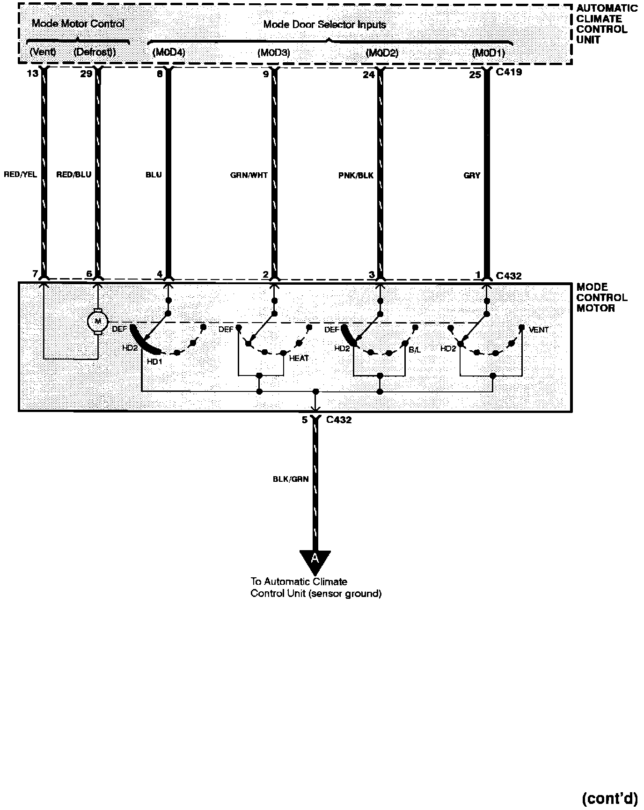

Operation CHARM
: Car repair manuals for everyone.
Home
>>
Acura
>>
1994
>>
NSX V6-3.0L DOHC
>>
Repair and Diagnosis
>>
Heating and Air Conditioning
>>
Diagrams
>>
Electrical Diagrams
>>
Air Delivery
>>
Part 2 of 4
Part 2 of 4
A/C: Air Delivery:
